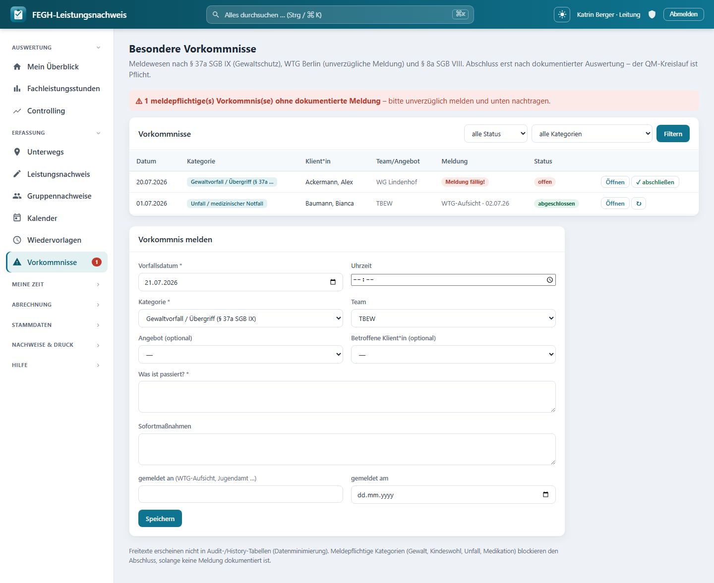

Vorkommnis-Meldewesen (QM)¶

Vorkommnis-Meldewesen mit erzwungenem QM-Kreislauf.
Besondere Vorkommnisse (Gewaltvorfaelle, Kindeswohlgefaehrdungen, Unfaelle, Medikationsfehler, Beschwerden) werden hier erfasst, gemeldet und ausgewertet – und zwar mit einem erzwungenen QM-Kreislauf: Ein Vorkommnis kann erst dann abgeschlossen werden, wenn die Auswertung/Massnahmen dokumentiert sind und – bei meldepflichtigen Kategorien – die Meldung an die zustaendige Stelle nachgewiesen ist. Der Ablauf folgt § 37a SGB IX (Gewaltschutz), dem WTG Berlin (unverzuegliche Meldung an die Aufsicht) und § 8a SGB VIII (Kindeswohl).
Aufruf ueber die Navigation „Vorkommnisse" (/vorkommnisse/).
Wer arbeitet mit dem Meldewesen?
Vorfaelle passieren im Dienst – deshalb erfassen alle Mitarbeitenden mit Klientenarbeit Vorkommnisse und sehen ihre eigenen. Die Leitung sieht und bearbeitet alle Vorkommnisse ihrer Teams und ist die einzige Rolle, die abschliessen darf. Verwaltung und Admin haben keinen Zugriff – die Beschreibungsfelder sind Art-9-Freitexte (Gesundheits- und Sozialdaten), auf die nur die fachlich zustaendigen Personen zugreifen sollen.
Ueberblick der Rollen¶
| Rolle | Vorkommnisse sehen | Erfassen / bearbeiten | Abschliessen / wieder oeffnen |
|---|---|---|---|
| User (mit Klientenarbeit) | nur selbst erfasste | ja | nein |
| Leitung | alle der geleiteten Teams | ja | ja |
| Verwaltung | – | – | – |
| Admin | – | – | – |
Die Sichtbarkeit steuert die interne Funktion _sichtbare(request): Leitung erhaelt
alle Vorkommnisse der Teams aus services.teams_fuer(user), alle anderen nur die
Datensaetze mit erstellt_von = ich. Wer keine Klientenarbeit hat
(services.ohne_klientenarbeit), sieht die Seite gar nicht.
Kategorien¶
Die Kategorie steuert, ob ein Vorkommnis meldepflichtig ist. Vier der sechs Kategorien loesen die Meldepflicht aus (Spalte „meldepflichtig").
| Kategorie | Bedeutung | Meldepflichtig |
|---|---|---|
| Gewaltvorfall / Uebergriff | Gewaltschutz nach § 37a SGB IX | ja |
| Gefaehrdungseinschaetzung | Kindeswohl nach § 8a SGB VIII | ja |
| Unfall / medizinischer Notfall | Unfall oder akuter medizinischer Vorfall | ja |
| Medikationsfehler | Fehler bei Gabe/Dosierung von Medikamenten | ja |
| Beschwerde | Beschwerde einer Klient*in oder Dritter | nein |
| sonstiges besonderes Vorkommnis | alles Weitere, das dokumentiert gehoert | nein |
Meldepflicht = Meldung dokumentieren
Bei den meldepflichtigen Kategorien musst du die Meldung unverzueglich absetzen (WTG) und sie anschliessend hier belegen: „gemeldet an" (z. B. WTG-Aufsicht, Jugendamt, Kostentraeger, Polizei) und „gemeldet am". Solange „gemeldet am" leer ist, gilt das Vorkommnis als meldung faellig und blockiert den Abschluss.
Ein Vorkommnis melden¶
Ueber das Formular „Vorkommnis melden" unter der Liste. Pflichtfelder sind mit
* markiert.
| Feld | Pflicht | Bedeutung |
|---|---|---|
| Vorfallsdatum | ja | Tag des Vorfalls (vorbelegt mit heute) |
| Uhrzeit | nein | Uhrzeit des Vorfalls |
| Kategorie | ja | eine der sechs Kategorien (siehe oben) |
| Team | – | Zuordnung; vorbelegt mit deinem Team, Leitung kann geleitete Teams waehlen |
| Angebot | nein | betroffenes Angebot (optional) |
| Betroffene Klient*in | nein | optional; nur Klient*innen aus deinem Zugriff |
| Was ist passiert? | ja | Sachverhaltsbeschreibung (Art-9-Freitext) |
| Sofortmassnahmen | nein | was unmittelbar getan wurde |
| gemeldet an | nein* | Empfaenger der Meldung, max. 160 Zeichen |
| gemeldet am | nein* | Datum der Meldung |
| Auswertung / abgeleitete Massnahmen | nein* | erst beim Bearbeiten sichtbar; Pflicht vor dem Abschluss |
* Formal keine HTML-Pflichtfelder, fachlich aber Voraussetzung: „gemeldet an/am" fuer meldepflichtige Kategorien, „Auswertung/Massnahmen" fuer jeden Abschluss.
Status ergibt sich automatisch
Ein neues Vorkommnis startet als offen. Sobald du Sofortmassnahmen erfasst oder ein „gemeldet am" eintraegst, springt der Status auf in Bearbeitung. Auf abgeschlossen setzt ausschliesslich die Leitung (siehe naechster Abschnitt).
Das Feld „Auswertung / abgeleitete Massnahmen" erscheint erst, wenn du ein bereits gespeichertes Vorkommnis ueber „Oeffnen" erneut bearbeitest – die Auswertung ist bewusst ein zweiter Schritt („Was aendern wir?").
Abschliessen (nur Leitung)¶
Der QM-Kreislauf endet mit dem Abschluss durch die Leitung. Beim Klick auf „✓ abschliessen" prueft die App zwei Bedingungen:
- Es ist eine Auswertung / Massnahmen dokumentiert (Feld
massnahmennicht leer). - Ist die Kategorie meldepflichtig, muss eine Meldung dokumentiert sein („gemeldet am" gesetzt).
Kein Abschluss ohne Auswertung und Meldung
Fehlt die Auswertung, meldet die App: „Bitte zuerst die Auswertung/Massnahmen dokumentieren – erst dann kann abgeschlossen werden (QM-Kreislauf)." Fehlt bei meldepflichtiger Kategorie die Meldung: „Meldepflichtiges Vorkommnis ohne dokumentierte Meldung – bitte zuerst die Meldung nachtragen." In beiden Faellen bleibt das Vorkommnis offen.
Beim Abschluss vermerkt die App abgeschlossen am und abgeschlossen von automatisch. Ein abgeschlossenes Vorkommnis kann die Leitung mit „↻" wieder oeffnen (Status: in Bearbeitung); das Abschlussdatum wird dabei zurueckgesetzt. Erfasser*innen ohne Leitungsrolle koennen ein bereits abgeschlossenes Vorkommnis nicht mehr aendern.
Der rote Nav-Badge¶
Neben dem Menuepunkt „Vorkommnisse" erscheint ein rotes Signal, sobald es ein meldepflichtiges Vorkommnis gibt, das noch nicht gemeldet wurde und nicht abgeschlossen ist. Der Badge zaehlt genau diese Faelle in deinem Sichtbereich (Leitung: teamweit, sonst deine eigenen Erfassungen).
Rotes Signal = handeln
Der Badge ist die Erinnerung an die WTG-Pflicht zur unverzueglichen Meldung. Er verschwindet erst, wenn zu jedem betroffenen Vorkommnis „gemeldet am" gesetzt (oder das Vorkommnis abgeschlossen) ist. Auf der Vorkommnis-Seite selbst siehst du zusaetzlich einen roten Hinweisbalken oben und in der Liste die Markierung „Meldung faellig!" in der Spalte Meldung.
Filtern und wiederfinden¶
Die Liste laesst sich oben nach Status und Kategorie filtern. Jede Zeile zeigt Datum/Uhrzeit, Kategorie, betroffene Klientin, Team/Angebot, den Meldestand und den Status. Ueber „Oeffnen"* gelangst du ins Bearbeitungsformular.
Datenschutz & Datensparsamkeit¶
Art-9-Daten bleiben im Fachkreis
Die Freitexte „Was ist passiert?", „Sofortmassnahmen" und „Auswertung/Massnahmen" enthalten besondere Kategorien personenbezogener Daten (Art. 9 DSGVO). Deshalb:
- Zugriff nur im Fachkreis: Erfasserinnen sehen ihre eigenen Vorkommnisse, die Leitung die des Teams. Verwaltung und Admin haben keinen* Zugriff.
- Team-Scoping: Jeder Datensatz haengt an einem Team; die Sichtbarkeit ist auf die eigenen bzw. geleiteten Teams begrenzt.
- Datenminimierung in der Historie: Die drei Art-9-Freitexte werden nicht in der Aenderungshistorie (Audit-Trail) mitgeschrieben. Protokolliert wird nur der Workflow (Kategorie, Status, Melde- und Abschlussdaten) – nicht der Inhalt.
Fuer Neugierige: Technik dahinter¶
Nur zur Nachvollziehbarkeit
Dieser Abschnitt ist optional und richtet sich an Interessierte, die verstehen wollen, wie das Meldewesen intern umgesetzt ist. Fuer die taegliche Bedienung brauchst du ihn nicht.
- View-Modul:
nachweis/views_qm.py. Die Liste rendertvorkommnisse(request), das Speichernvorkommnis_speichern(POST), der Statuswechselvorkommnis_status(POST). Routen:/vorkommnisse/,/vorkommnisse/speichern/,/vorkommnisse/status/(nachweis/urls.py). - Sichtbarkeit:
_sichtbare(request)inviews_qm.py– Leitung (services.ist_leitung) sieht alle Vorkommnisse ausservices.teams_fuer(user), sonst Filter auferstellt_von. Ohne Klientenarbeit (services.ohne_klientenarbeit) kein Zugriff. - Modelle:
Vorkommnis,VorkommnisKategorie,VorkommnisStatus(nachweis/models.py). Kategorien:gewalt,kindeswohl,unfall,medikation,beschwerde,sonstig. Status:offen,in_bearbeitung,abgeschlossen. - Meldepflicht:
Vorkommnis.MELDEPFLICHTIG = ("gewalt", "kindeswohl", "unfall", "medikation"); die PropertyVorkommnis.meldung_faelligistTrue, wenn die Kategorie meldepflichtig ist,gemeldet_amfehlt und der Status nichtabgeschlossenist. - Abschluss-Zwang:
vorkommnis_statusblockiert die Aktionabschliessen, solangemassnahmenleer ist odermeldung_faelliggilt; erst dann werdenstatus=abgeschlossen,abgeschlossen_amundabgeschlossen_vongesetzt. Die Aktionoeffnensetzt zurueck aufin_bearbeitung. - Auto-Status: In
vorkommnis_speichernwechseltoffen→in_bearbeitung, sobaldsofortmassnahmenodergemeldet_amvorliegt. - Nav-Badge:
nav_vork_meldungausnachweis/context.py(globale) zaehltVorkommnis-Datensaetze mitkategorie__in=MELDEPFLICHTIG,gemeldet_am__isnull=Trueund Status ungleichabgeschlossen, gescopt wie die Liste (Leitung = Team, sonsterstellt_von). - Datenminimierung:
history = HistoricalRecords(excluded_fields=["beschreibung", "sofortmassnahmen", "massnahmen"])haelt die Art-9-Freitexte aus dem Audit-Trail heraus. - Template:
nachweis/templates/nachweis/vorkommnisse.html(Liste, Melde-/ Bearbeitungsformular, roter Hinweisbalkenn_meldung_faellig, Markierung „Meldung faellig!").